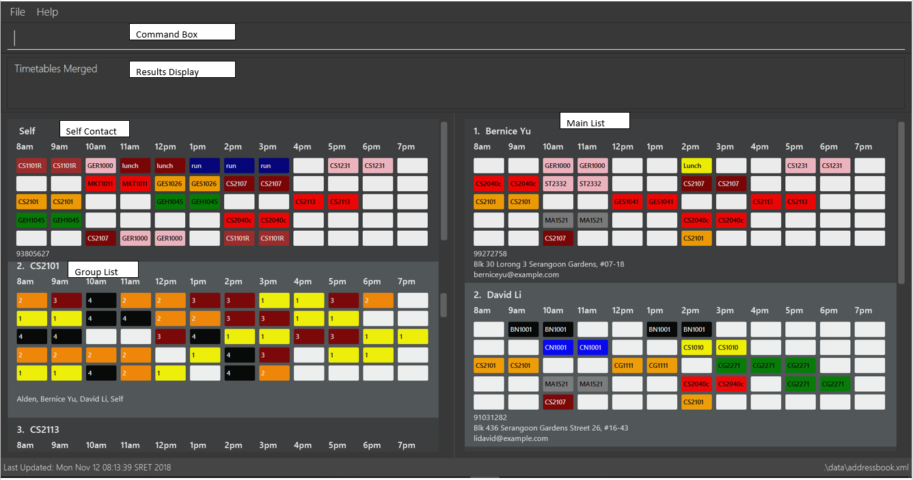

By: CS2113-AY1819S1-W12-2 Since: Aug 2018 Licence: MIT
- 1. Introduction
- 2. Quick Start
- 3. Features
- 3.1. General Commands
- 3.2. Address Book Commands
- 3.2.1. Viewing help :
help - 3.2.2. Adding a person:
add - 3.2.3. Listing all persons :
list - 3.2.4. Editing a person :
edit - 3.2.5. Locating persons by name:
find - 3.2.6. Deleting a person :
delete - 3.2.7. Selecting a person :
select - 3.2.8. Undoing previous command :
undo - 3.2.9. Redoing the previously undone command :
redo - 3.2.10. Clearing all entries :
clear
- 3.2.1. Viewing help :
- 3.3. Timetable Commands
- 3.4. Notes Commands
- 3.4.1. Downloading all notes from a selected module from IVLE :
downloadAllNotes - 3.4.2. Display all notes from a selected module from IVLE :
downloadSelectNoteswithout prefix"file/" - 3.4.3. Downloading selective notes from a selected module from IVLE :
downloadSelectNoteswith prefix"file/" - 3.4.4. Show all downloaded notes:
showNotes - 3.4.5. Clearing all downloaded notes :
clearNotes - 3.4.6. Deleting notes from one or more selected modules :
deleteSelectNotes
- 3.4.1. Downloading all notes from a selected module from IVLE :
- 4. Upcoming Features
- 5. FAQ
- 6. Command Summary
1. Introduction
NSync is a program for NUS students who strive to keep their lives organised, despite their busy schedules. Interested? Jump to the Section 2, “Quick Start” to get started. Enjoy!
2. Quick Start
-
Ensure you have Java version
9or later installed in your Computer. -
Download the latest
addressbook.jarhere. -
Copy the file to the folder you want to use as the home folder for your Address Book.
-
Double-click the file to start the app. The GUI should appear in a few seconds.
-
Download the addressbook.xml file at this link https://github.com/CS2113-AY1819S1-W12-2/main/releases/tag/V1.4 and replace your own data file with it to get 20 normal contacts and 7 merged contacts.
 -
Type the command in the command box and press Enter to execute it.
e.g. typinghelpand pressing Enter will open the help window. -
Some example commands you can try:
-
list: lists all contacts -
addn/John Doe p/98765432 e/johnd@example.com a/John street, block 123, #01-01: adds a contact namedJohn Doeto the Address Book. -
deletemain 3: deletes contact whose index number is 3 -
exit: exits the app
-
-
Refer to Section 3, “Features” for details of each command.
3. Features
Command Format
-
Words in
UPPER_CASEare the parameters to be supplied by the user e.g. inadd n/NAME,NAMEis a parameter which can be used asadd n/John Doe. -
Items in square brackets are optional e.g
n/NAME [t/TAG]can be used asn/John Doe t/friendor asn/John Doe. -
Items with
… after them can be used multiple times including zero times e.g.[t/TAG]…can be used ast/friend,t/friend t/familyetc. -
Items with
1.. after them can be used multiple times, excluding zero times e.g.[ENROLLED MODULE]1.. -
Parameters can be in any order e.g. if the command specifies
n/NAME p/PHONE_NUMBER,p/PHONE_NUMBER n/NAMEis also acceptable.
3.1. General Commands
3.1.1. Listing entered commands : history
Lists all the commands that you have entered in reverse chronological order.
Format: history
|
3.1.2. Exiting the program : exit
Exits the program.
Format: exit
3.1.3. Saving the data
Address book data are saved in the hard disk automatically after any command that changes the data.
There is no need to save manually.
3.2. Address Book Commands
3.2.1. Viewing help : help
Format: help
3.2.2. Adding a person: add
Adds a person to the address book
Format: add n/NAME p/PHONE e/EMAIL a/ADDRESS [t/TAG]…[em/ENROLLED MODULE]…
| If you somehow lose your self contact, you can create a new one by adding t/self to your add command. Adding any other tag will not have any effect on the contact created. If your self contact exists, it will not allow you to add a self tag. |
Examples:
-
add n/John Doe p/98765432 e/johnd@example.com a/John street, block 123, #01-01 -
add n/Betsy Crowe t/friend e/betsycrowe@example.com a/Newgate Prison p/1234567 em/CS2113T -
add n/Self t/self e/bart@example.com a/Jurong East Street 52 p/92131921
| Contacts in this addressbook are automatically sorted in alphabetical order |
| Trying to add a new contact (with different user fields) with the same name as an existing contact does not currently work |
3.2.3. Listing all persons : list
Shows a list of all persons in the address book.
Format: list
3.2.4. Editing a person : edit
Edits an existing person in the address book.
Format: edit INDEX [n/NAME] [p/PHONE] [e/EMAIL] [a/ADDRESS] [em/ENROLLED MODULE]…
Examples:
-
edit 1 p/91234567 e/johndoe@example.com
Edits the phone number and email address of the 1st person to be91234567andjohndoe@example.comrespectively. -
edit 2 n/Betsy Crower
Edits the name of the 2nd person to beBetsy Crower. -
edit 3 n/Esther Daniels em/
Edits the name of the 3rd person to beEsther Danielsand clears all existing enrolled modules.
3.2.5. Locating persons by name: find
Finds persons whose names contain any of the given keywords.
Format: find MAIN/MERGED KEYWORD [MORE_KEYWORDS]
Examples:
-
find main John
ReturnsjohnandJohn Doefrom the main contact list -
find merged CS2113 CS2101
Returns any groups having namesCS2113andCS2101from the group contact list
3.2.6. Deleting a person : delete
Deletes the specified person from the address book.
Format: delete MAIN/MERGED INDEX
Examples:
-
list
delete main 2
Deletes the 2nd person in the address book. -
find merged CS2101
delete merged 1
Deletes the 1st group in the results of thefindcommand.
3.2.7. Selecting a person : select
Selects the person identified by the index number used in the displayed person list.
Format: select INDEX
Examples:
-
list
select 2
Selects the 2nd person in the address book. -
find main Betsy
select 1
Selects the 1st person in the results of thefindcommand.
3.2.8. Undoing previous command : undo
Restores the address book to the state before the previous undoable command was executed.
Format: undo
|
Examples:
-
delete 1
list
undo(reverses thedelete 1command) -
select 1
list
undo
Theundocommand fails as there are no undoable commands executed previously. -
delete 1
clear
undo(reverses theclearcommand)
undo(reverses thedelete 1command)
3.2.9. Redoing the previously undone command : redo
Reverses the most recent undo command.
Format: redo
Examples:
-
delete 1
undo(reverses thedelete 1command)
redo(reapplies thedelete 1command) -
delete 1
redo
Theredocommand fails as there are noundocommands executed previously. -
delete 1
clear
undo(reverses theclearcommand)
undo(reverses thedelete 1command)
redo(reapplies thedelete 1command)
redo(reapplies theclearcommand)
3.2.10. Clearing all entries : clear
Clears all entries from the address book and resets your self contact.
Format: clear
3.3. Timetable Commands
3.3.1. Changing Time Slots: change
You can change your own, or a contact’s timetable to reflect whether there is an activity at a specified time slot, or whether it is free or busy.
Format: change INDEX/SELF DAY TIME ACTIVITY/FREE/BUSY
change 1 mon 8am GER1000
Changes the mon 8am time slot of the first contact in the main contact list to GER1000
Before:

After:

3.3.2. Merging timetables: merge
You can select multiple contacts whose timetables you would like to merge and give it a group name. This displays a collated timetable with the number of people busy for each time slot. It also displays the names of the people in the group.
Format: merge m/INDEX m/INDEX…
merge m/2 m/3 m/4 n/CS2101 Project
Merges your own timetable with the 2nd, 3rd and 4th people in the address book.

The merged timetable will be added to the list of groups
3.3.3. Updating group timetables: update
You can automatically update your group timetables based on whatever changes have been made to your contacts' timetables.
Format: update
3.3.4. Filters contacts based on free time slots and activities: filter
You can select a time slot or activity you would like to filter your contacts by. Time slot filtering filters out people who are busy at the selected time slot. Activity filtering filters out people who do not have the activity in their timetable or does not have the module in their enrolled modules if the activity is a module taken.
Format: filter ACTIVITY /DAY TIME…
filter GER1000
Shows only contacts who have GER1000 in the timetable.
filter run
Shows only contacts who have run in their timetable.
filter mon 10am
Shows only contacts who are free at mon 10am.
filter GER1000 mon 10 am
Shows only contacts who have GER1000 in their timetable and are free at mon 10am.
3.3.5. Filters for next free time-slot: free
Want to meet up with your friends at the soonest opportunity? Or would you like to find out when is the next time you can take a break (with no scheduled activities)? free allows you to easily find the next available time-slot from the current time for one or more of your NSync contacts, giving you answers to these questions!
Format: free f/[SELF/INDEX] …

Example 1: free f/self
Running this command will show your next available time-slot (from current time).
With reference to the time-table found in the figure above, if the current day and time is Monday 3:00pm, your next available time-slot shown is Monday 4:00pm till 8:00pm. If the current day and time is Monday 4:34pm, your next available time-slot shown is Monday 4:34pm till 8:00pm.
Example 2: free f/1 f/7 f/9
Running this command will show the next available time-slot (from current time) for contacts whose indices are 1, 7 and 9 respectively.
| Running this command outside the day window of Monday to Friday or beyond the time of 8pm will return a time-slot from the next weekday. |
3.3.6. Export user data: export
Met a new acquaintence who would like to have your contact details and time-table to schedule a common meeting time? export allows you to export all of a user’s (or your own) details in each respective field into an encoded string. (Once you have sent the string to another NSync user, he/she can use import to retrieve the data within the encoded string - see import for more details)
Format: export PUBLIC/PRIVATE SELF/INDEX
All examples shown below are with reference to the sample time-table shown in the figure above.
Example 1: export public self
The importing user will see your time-table in its entirety (i.e. the full contents of the time-table), exactly as shown in the sample time-table above.
Example 2: export private self
The importing user will see only the busy and free time-slots in your time-table, marked as black and white colored slots respectively, as seen in the figure below.

| The generated string from the command will be automatically copied for you (no manual selecting and copying required)! All you have to do is to send it in its entirety to a fellow NSync user who will import it. |
| When exporting a time-table with only free and busy time-slots (i.e. black and white slots), it does not matter if you select either the public or private option - the user who imports your generated string will see the same time-table. |
| Exporting more than 1 user’s details at a time or exporting a merged time-table is currently not available (but will be implemented in future releases!). |
3.3.7. Import user data: import
Did you receive an encoded string from a fellow NSync user? Use import to transfer all of the data within the string into your copy of NSync!
Format: import [PASTE_YOUR_ENCODED_STRING_HERE]
Display Message 1: Import Successful!
If you have imported a valid contact who is currently not in your NSync (i.e. no contact with the same name), all of the imported user’s details will now be found in your NSync.
If you see only black and white colored slots in the time-table of the imported contact, it means that the exporting user could have chosen the private option during the export process. See export for more details.
|
Display Message 2: Import Successful! An existing contact has been found in NSync and has been overwritten.
If you have imported a valid contact who is currently already in your NSync (i.e. contact with the same name), all of the details found in the imported string will overwrite the existing ones found in your NSync, for that particular contact.
If you have unintentionally over-written the details of an existing contact, use undo to get back the original details of the contact!
|
Display Message 3: Import Failed!
If you have missed out a character, or accidentally modified one of the characters in the string, attempting to import the invalid string will result in an error displayed. Please obtain a valid string from the contact who passed it to you.
3.4. Notes Commands
| The download function has temporarily been disabled in accordance with NUS Information Technology Acceptable use policy for IT resources Ver4.2, Clause 4.6 |
You are still able to login and view available files to be downloaded. Try out downloadSelectNotes without the /file prefix!
| You would need to have Google Chrome installed in the default location, run Windows 8 or above and be connected to the internet to use the download commands. |
| You would be unable to see your inputted command after inputting it, this is a security feature to prevent your login credentials from being compromised. |
3.4.1. Downloading all notes from a selected module from IVLE : downloadAllNotes
Downloads the your notes from IVLE, and stores them in the folder "Notes"
Format: downloadAllNotes downloadAllNotes [user/IVLE USERNAME] [pass/IVLE PASSWORD] [mod/ENROLLED MODULE]

Example DownloadAllNotes command usage.
-
Automatically accesses the your IVLE account using Google Chrome, and downloads all notes and resources of the specified module.
You do not have to Enter the full module code or worry about the capitalization. Example: if you are enrolled in CS2113 and CS2101 entering mod/cs21 will select cs2101
|
-
You may notice a new window of Google Chrome opening up. Do not interact with it or you might interfere with the download.

-
NSync might be unresponsive during the download, it is so to prevent you from accidentally introducing file corruption.
-
If your download is successful, the result window of NSync will display the exact path to your newly downloaded notes.
Examples and what you might expect :
Download Successful :

Module not found :
Password or username Incorrect :

3.4.2. Display all notes from a selected module from IVLE : downloadSelectNotes without prefix "file/"
Displays all the available notes of a selected
Format: downloadSelectNotes [user/IVLE USERNAME] [pass/IVLE PASSWORD] [mod/ENROLLED MODULE]
| Currently the files are not sorted in any order. In a future version we will make its sorted by file type |

Example DownloadSelectFile without file/ prefix usage
-
All available notes from the selected module would be sourced and displayed
-
if a file is not shown, it could be either a private folder or a submission folder, consult your lecturer for more information
Examples and what you might expect :
File Fetch Successful :

| the number on the left of the file represents the file ID, it is static. Example: "0:LP41_More_UML_Inheritence.pptx" 0 is the file index. |
3.4.3. Downloading selective notes from a selected module from IVLE : downloadSelectNotes with prefix "file/"
Download a selective number of notes from IVLE, and stores them in the folder "notes".
Format: downloadSelectNotes [user/IVLE USERNAME] [pass/IVLE PASSWORD] [mod/ENROLLED MODULE] [file/0,1,2…n]
Use downloadSelectFile without the file\ prefix to obtain the file indexes.
|

Example DownloadSelectFile with file/ prefix usage
-
The files would be downloaded one by one from IVLE to your "notes" folder.
-
if you entered a mix of invalid and valid file IDs, NSync will only only download the correct files, up till it encounters a invalid ID.
Example: file/0,1,2,90000000,3 if 0,1,2,3 are valid file IDs, only file 0,1,2 will be downloaded.
Examples and what you might expect :
Download Successful :

File not found :
3.4.4. Show all downloaded notes: showNotes
Displays all the downloaded notes in the UI
Format: showNotes
| the files are displayed in the order that it is in your directory |
-
It recursively searches your
notesfolder and displays all the files available
Examples of usage:


3.4.5. Clearing all downloaded notes : clearNotes
Clears all downloaded notes.
Format: clearNotes
3.4.6. Deleting notes from one or more selected modules : deleteSelectNotes
Deletes the notes that belong to the specified module, from storage
Format: deleteSelectNotes [ENROLLED MODULE]1..
Examples:
-
deleteSelectNotes CS2100
Deletes the notes belonging to the module CS2100. -
deleteSelectNotes CS2105 CS2106
Deletes the notes belongs to the modules CS2105 and CS2106. -
deleteSelectNotes CS
Deletes the notes belongs to modules that have "CS" in their names -
deleteSelectNotes PL3232
Will not delete anything if "PL3232" does not exist as your downloaded notes. -
deleteSelectNotes PL3232 CS2106
Will not delete anything if "PL3232" does not exist as your downloaded notes, however notes belonging to "CS2106" would be deleted.
4. Upcoming Features
4.1. Encrypting data files [coming in v2.0]
NSync will automatically encrypt your data upon exiting the program.
Before exiting, NSync will prompt you for a password, which it uses to encrypt your data.
Upon start up, NSync will prompt you for the same password, which it uses to decrypt your data.
| NSync will only encrypt you data if you enter a password when prompted upon exit. If no password is entered, NSync will not encrypt your data |
4.2. Display of notes in the Graphical User interface upon download [coming in v2.0]
NSync will automatically display your notes, after the download has completed.
This allows you to have an immediate idea of exactly what you downloaded.
Example:
5. FAQ
Q: How do I transfer my data to another Computer?
A: Install the app in the other computer and overwrite the empty data file it creates with the file that contains the data of your previous Address Book folder.
The downloaded notes can be transferred in the same way.
Q: What is IVLE?
A: According to the National University of Singapore (NUS), Integrated Virtual Learning Environment (IVLE) is a NUS' custom designed and built Learning Management System
for the NUS community. It is designed to facilitate and supplement teaching at the National University of Singapore (NUS).
6. Command Summary
-
Add
add n/NAME p/PHONE e/EMAIL a/ADDRESS [t/TAG]…[em/ENROLLED MODULE]…
e.g.add n/James Ho p/22224444 e/jamesho@example.com a/123, Clementi Rd, 1234665 t/friend t/colleague em/CS2101 em/CS2113 -
Clear :
clear -
Clear Notes :
clearNotes -
Delete selected notes :
deleteSelectedNotes [ENROLLED MODULE]1.."
e.g. `deleteSelectedNotes CS2105 CS2106 -
Download All Notes :
downloadAllNotes user/e1234567 pass/password1 mod/CS2113 -
Download Selected Notes (selected notes) :
downloadSelectNotes user/e1234567 pass/password1 mod/CS2113 file/1,2,3… -
Download Selected Notes (show all notes) :
downloadSelectNotes user/e1234567 pass/password1 mod/CS2113 -
Show notes :
showNotes -
Delete :
delete INDEX
e.g.delete 3 -
Edit :
edit INDEX [n/NAME] [p/PHONE_NUMBER] [e/EMAIL] [a/ADDRESS] [t/TAG]… [em/ENROLLED MODULE]…
e.g.edit 2 n/James Lee e/jameslee@example.com -
Find :
find KEYWORD [MORE_KEYWORDS]
e.g.find James Jake -
Help :
help -
History :
history -
List :
list -
Merge Timetables :
merge [index 1] [index 2] <add more indices if required>e.g.merge 1 2 5 -
Redo :
redo -
Select :
select INDEX
e.g.select 2 -
Undo :
undo